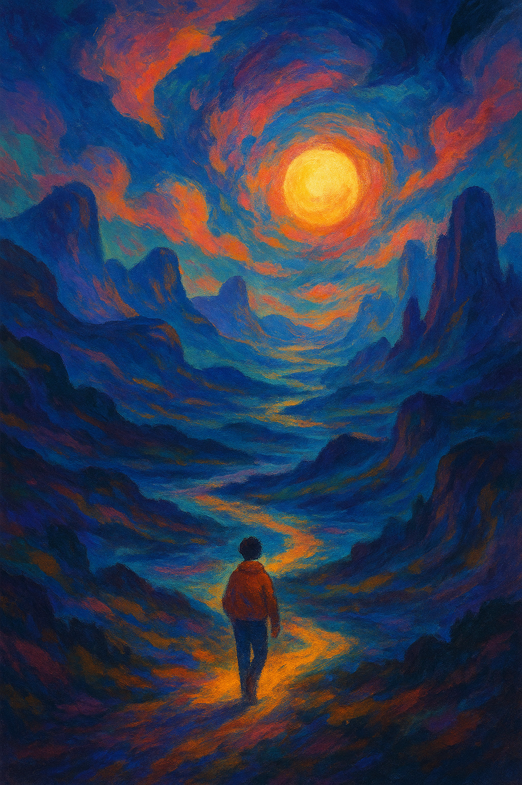

Dreamscape
A vibrant digital painting exploring surreal landscapes and emotional color palettes.
Digital Artist • Illustrator • Graphic Designer
Hi, I’m Nishita, a high-school junior and a passionate digital artist who loves to create visual stories through drawing, illustration, and design. This portfolio shares my journey as I experiment with color, characters, and simple interface designs.
I enjoy blending hand-drawn ideas with digital tools like Adobe Photoshop, Illustrator, and Procreate. My work is inspired by everyday moments, expressive characters, and modern digital aesthetics.
View My WorkA selection of projects that show my growing skills in digital illustration, graphic design, and simple UI/UX concepts. Replace each card with your own image and description.
A vibrant digital painting exploring surreal landscapes and emotional color palettes.
Character sketches focused on facial expressions and stylized features.
Logo and brand system for a cozy fictional café, using soft shapes and warm colors.
A concept poster using contrast, glow effects, and bold typography.
Figma mockups for a meditation and mood-tracking app with soft, calming colors.
A clean homepage layout for a local art studio, highlighting classes and instructors.
My sketchbook is where new ideas begin—loose drawings, thumbnails, anatomy practice, and visual notes for future projects.
Studies of facial features and body poses to improve proportion and expression.
Small composition sketches exploring lighting and perspective for digital paintings.
Quick panels mapping out ideas for short animations or motion graphics.
I’m a student artist combining traditional drawing with digital tools to create expressive illustrations, designs, and simple interfaces.
My strengths in art, math, and visual problem-solving help me think about balance, composition, and structure while I’m designing. I enjoy learning new techniques and challenging myself with each project.
Adobe Photoshop, Adobe Illustrator, Procreate, Canva, Figma, pencil & ink sketchbooks.
Thank you for taking the time to view my work. I’d love to connect, receive feedback, or learn about opportunities to grow and collaborate.
Email: your-email@example.com
Instagram (optional): @nishita.art
Behance (optional): behance.net/yourprofile